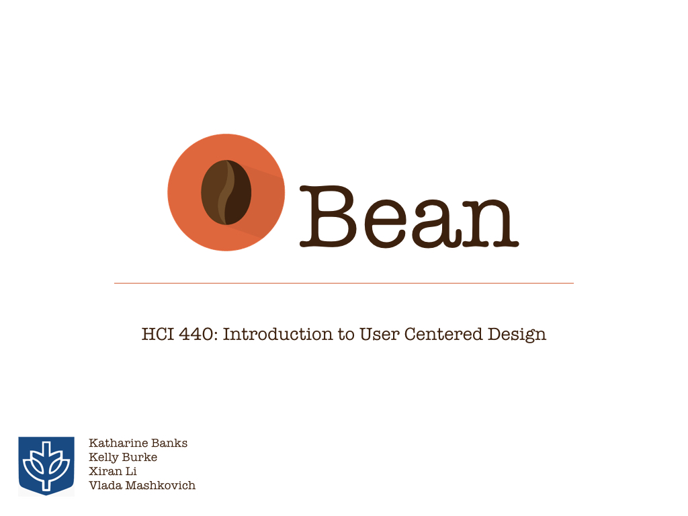

user experience research and design
INTRODUCTION
Bean is a mobile app and wearable device created as part of a course long project for DePaul University's HCI 440: Introduction to User-Centered Design instructed by Ugochi Acholonu.
The task was to design a wearable device and mobile app to help solve a problem that our group would need to define from our observation of areas where we noticed process breakdowns.
The final deliverables were an in-class presentation of the user findings and low-fidelity wearable device and medium-fidelity app prototype.
DESIGN PROCESS
• Defined the problem through observation of coffee establishments and the process breakdowns that occur within them
• Performed user research by using personas and conducting user interviews
• Ideated designs and plans for the wearable device, data transfer strategy and app interface with the aid of user flows and sketches
• Built medium-fidelity prototype of the app to use in the usability testing of users and stakeholders
• Tested users to identify possible issues with the app/wearable device as well as the intuitiveness level of both
MY CONTRIBUTION
• Performed market research on coffee consumption in the US as well as current coffee shop apps available
• Observed one subject during her coffee ordering routine and conducted interview to augment the user personas created
• Brainstormed and sketched iterations of wearable device
• Built first iteration of low-fidelity wearable device prototype
• Built all iterations of fully clickable medium-fidelity app prototype
• Conducted usability tests on both the wearable device and app
POST CLASS
• Created high-fidelity app wireframe
TOOLS
• Hand sketching
• Balsamiq
• Photoshop
• Stormboard
• Axure (for post-class work)
DELIVERABLES
presentation deck
sample of wireframes


{kind=link}